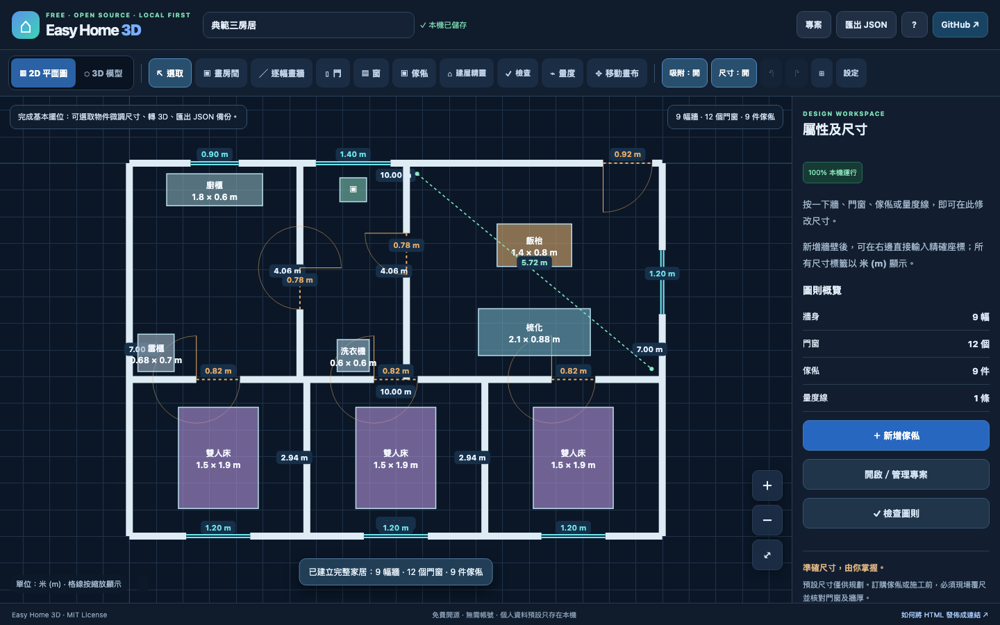
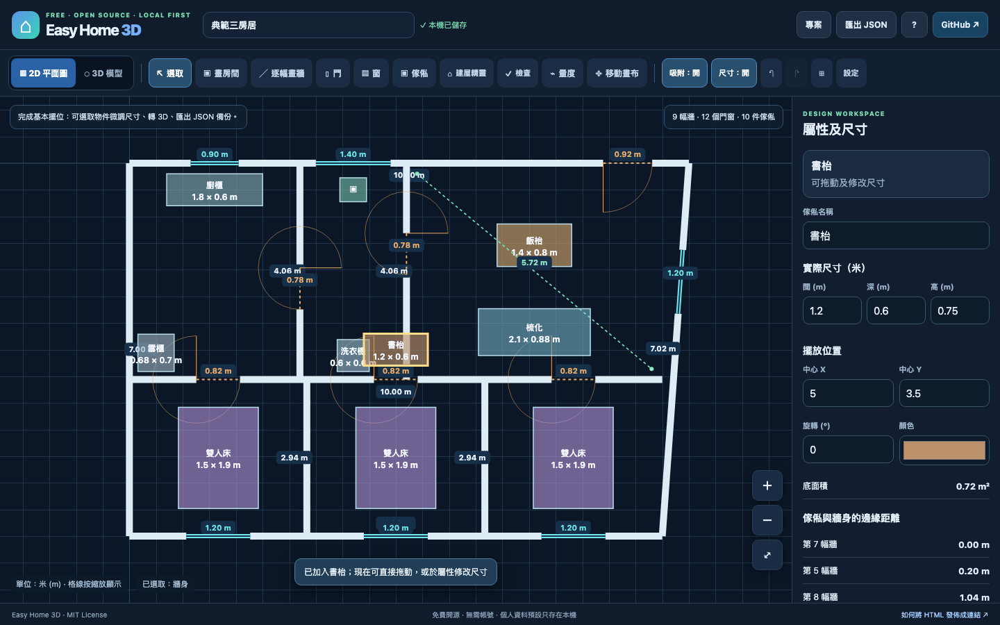
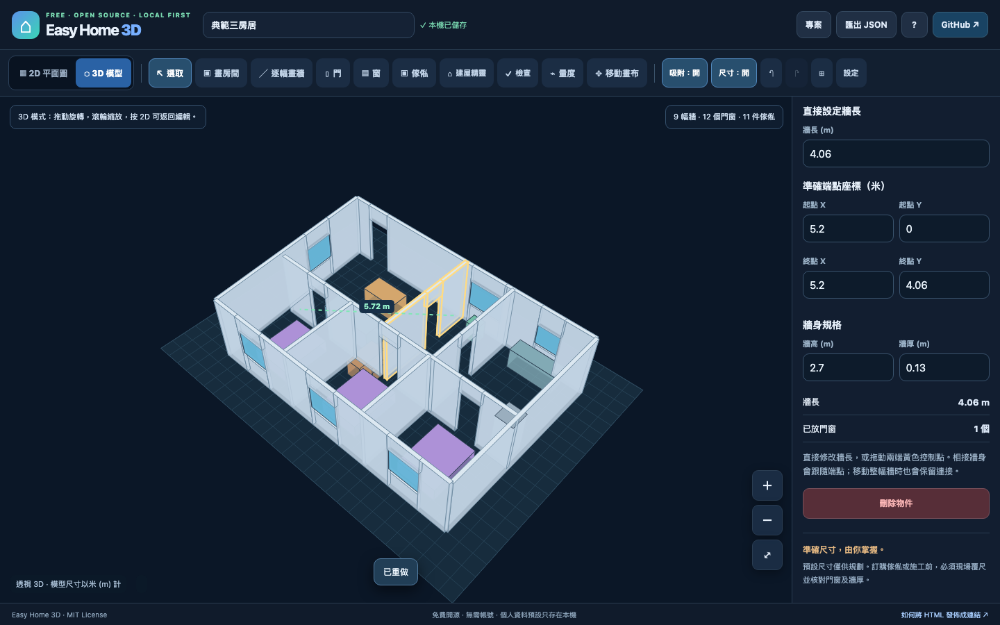
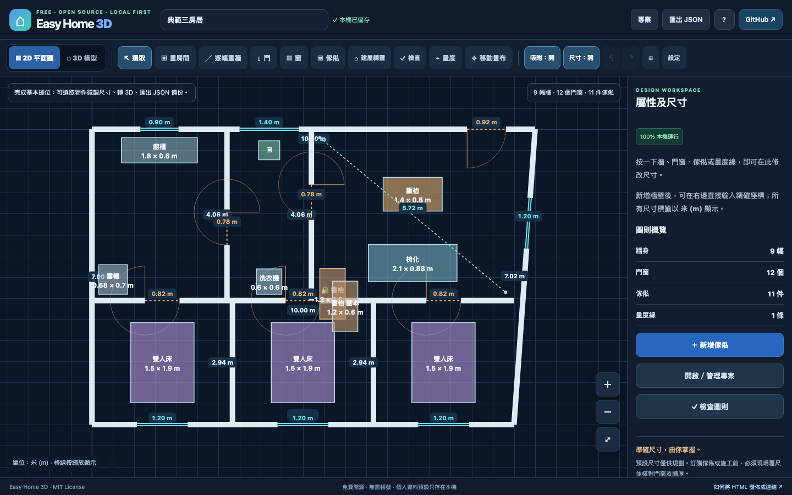

Easy Home 3D · 端到端建屋驗證
由空白圖則開始，使用「建屋精靈」建立一間 9 幅牆、12 個門窗、9 件傢俬的住宅，再逐項驗證編輯、3D、備份及還原。
9牆身
12門窗
9傢俬
1量度線
3專案（還原後）
圖則檢查：✓ 圖則檢查通過 沒有發現門窗重疊、超出牆身、牆身斷開或傢俬碰撞。此檢查只作規劃輔助，不取代現場覆尺及專業結構評估。
功能驗證
- 牆長修改：10 m → 10.5 m；相接牆端點誤差 0 m。
- 傢俬拖動位移 0.806 m；旋轉、鎖定（成功）、複製、Undo／Redo 数量 11 → 10 → 11。
- JSON 匯出後匯入至新專案，重新載入仍有 12 個門窗。
- 瀏覽器 JavaScript 錯誤：零。
操作截圖





